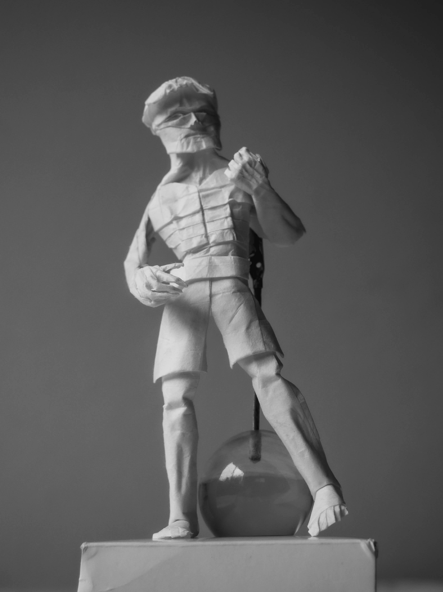

Back to portfolio
"If David wore pants"

Designed and folded January 2023
Paper: 35cm wenzhou
This model is the same generic human figure base that @origamibyboice and @origami_chris and I have been working with recently. The structure is nothing out of the ordinary, but our goal was for each of us to step up our shaping skills. For me, I think the face always has room to improve (mainly in terms of head size proportions), but I'm especially happy with how the hands turned out.